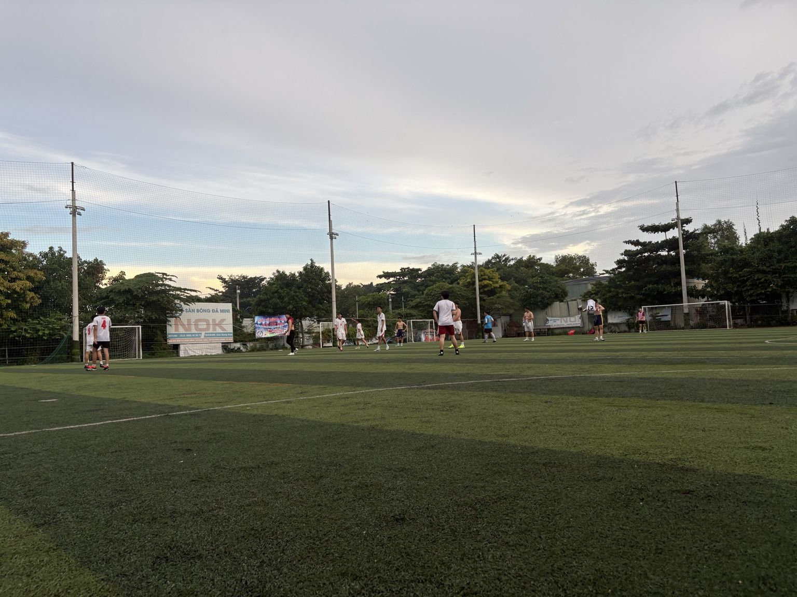

Rose FC 8–3 KFC FC: Hoàng Duy lập poker trong cơn mưa bàn thắng
Một khởi đầu không thuận lợi, một màn lội ngược dòng mạnh mẽ và bốn bàn thắng của Nguyễn Hoàng Duy. Rose FC khép lại trận giao hữu tại sân NOK bằng chiến thắng 8–3 trước KFC FC.

Khởi đầu thận trọng, bàn thua đến sớm
Rose FC nhập cuộc thận trọng, chủ động kéo đội hình thấp để thăm dò đối thủ. Trong điều kiện thời tiết thay đổi và xuất hiện mưa trong thời gian thi đấu, KFC FC là đội mở tỷ số sau một tình huống phát bóng dài. Lưu Gia Bảo rời khung thành nhưng pha ra vào không đạt độ chính xác cần thiết, tạo cơ hội để đối phương tận dụng.
Phản ứng nhanh và cuộc lội ngược dòng
Rose FC nhanh chóng đưa trận đấu trở lại vạch xuất phát. Nguyễn Hoàng Duy tăng tốc bên hành lang biên trước khi chuyền vào trong để Trương Anh Khoa ghi bàn gỡ 1–1. Sau đó, Rose FC đẩy cao đội hình và liên tục gây sức ép. Nguyễn Xuân Đức và Hoàng Duy ghi bàn, trong khi áp lực từ Rose FC còn khiến KFC FC có một tình huống phản lưới nhà.
Từ thế bị dẫn trước, Rose FC khép lại hiệp một với lợi thế 4–1.

Trương Kiếm Huy ra mắt trong hiệp hai
Bước sang hiệp hai, Rose FC thực hiện nhiều thay đổi để trao cơ hội thi đấu cho các thành viên. Đáng chú ý là sự xuất hiện của thủ môn Trương Kiếm Huy, 14 tuổi, đánh dấu những phút thi đấu đầu tiên trong khung thành Rose FC ở trận giao hữu này.
Hoàng Duy hoàn tất cú poker
Hiệp hai trở thành sân khấu của Nguyễn Hoàng Duy. Sau bàn thắng trước giờ nghỉ, tiền đạo Rose FC ghi thêm ba bàn để hoàn tất cú poker bốn bàn, trong đó có một cú sút phạt trực tiếp đầy chất lượng và một pha bắt volley đẹp mắt. Nguyễn Chí Hiếu cũng ghi một bàn, giúp Rose FC ấn định chiến thắng 8–3.
Danh sách ghi bàn
Nguyễn Hoàng Duy
4 bàn thắng · 1 kiến tạo. Trực tiếp góp dấu giày vào năm bàn thắng của Rose FC.
Tổng kết
Chiến thắng 8–3 cho thấy khả năng tấn công hiệu quả khi Rose FC tìm được nhịp chơi, đồng thời cũng để lại những điểm cần tiếp tục cải thiện ở khả năng kiểm soát khoảng trống phía sau và chuyển trạng thái phòng ngự. Quan trọng hơn tỷ số, trận đấu mang lại thêm dữ liệu thực tế cho quá trình xây dựng bộ khung sân 7.